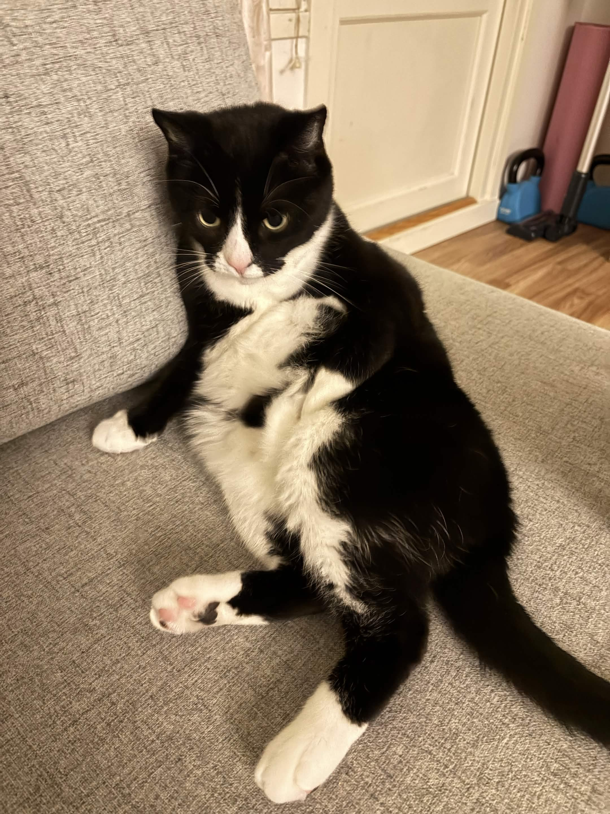
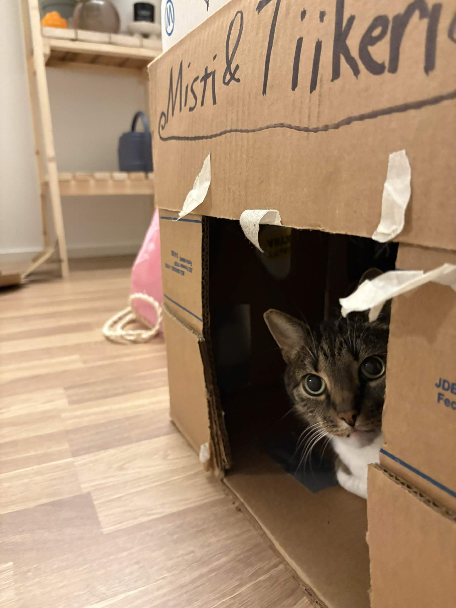

Meistä
Tervetuloa lukemaan Mistin ja Tiikerin tarinaa!
Me olemme Misti ja Tiikeri, kaksi erilaista mutta täydellisesti toisiaan
täydentävää kissa-ystävystä.
Vaikka asumme saman katon alla ja jaamme arjen rutiinit, meillä kummallakin on omat ainutlaatuiset tapamme, lempipaikkamme ja mieltymyksemme.
Tällä sivulla pääset tutustumaan tarkemmin meidän luonteisiimme, päivittäisiin seikkailuihimme sekä tietysti niihin kaikkein tärkeimpiin asioihin – nimittäin lempiruokiimme ja siihen, miten otamme arjestamme kaiken irti!
Misti

Misti – Puhelias ja rauhallisuutta rakastava kaunotar
Olen Misti, tyylikäs mustavalkoinen kissa.
Eläinlääkäriasemalla minua kutsutaan usein lempinimellä Misty.
Minulla on tapana kommentoida arjen tapahtumia: kerron mielelläni ääneen, milloin on ruoka-aika, milloin haluan rapsutuksia tai kun jokin asia kotona kaipaa huomiotani.
Luonteeltani olen kuitenkin hieman ujo ja herkkä. En pidä kovista äänistä, äkillisistä liikkeistä enkä suurista ihmismääristä. Jos kodissamme on paljon vieraita, viihdyn paremmin omassa rauhallisessa piilossani.
Parasta mitä tiedän, on viettää rauhallista aikaa oman lempihahmoni – eli parhaan ihmiseni – seurassa. Kun saamme olla kaksin ilman melua ja kiirettä, olen maailman onnellisin ja tyytyväisin kissa.
Tiikeri

Tiikeri – Hiljainen kehrääjä ja pehmeä sylikissa
Minä olen Tiikeri! Sain nimeni upeasta turkistani, jonka raidat ja kuviot muistuttavat aivan viidakon tiikeriä.
Minua saa kuitenkin kutsua myös kotoisasti Tikkrustiksi. Toisin kuin Misti, minä en käytä ääntäni juuri lainkaan.
Olen erittäin hiljainen ja tyyni kissa, joka mieluummin tarkkailee maailmaa rauhassa.
Osoitan kiintymykseni ja rakkauteni tekojen kautta: kun haluan läheisyyttä, tulen hiljaa omistajani viereen, alan kehrätä matalalla äänellä ja puskemaan päätäni hellästi heitä vasten.
Rakastan myös käsien nuolemista ja pehmeiden vilttien "leipomista" tassuillani ennen kuin rauhoitun pitkille päiväunille.